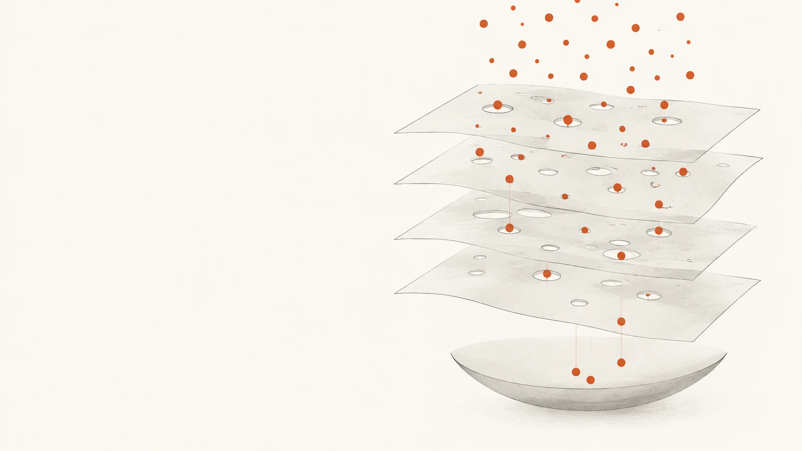
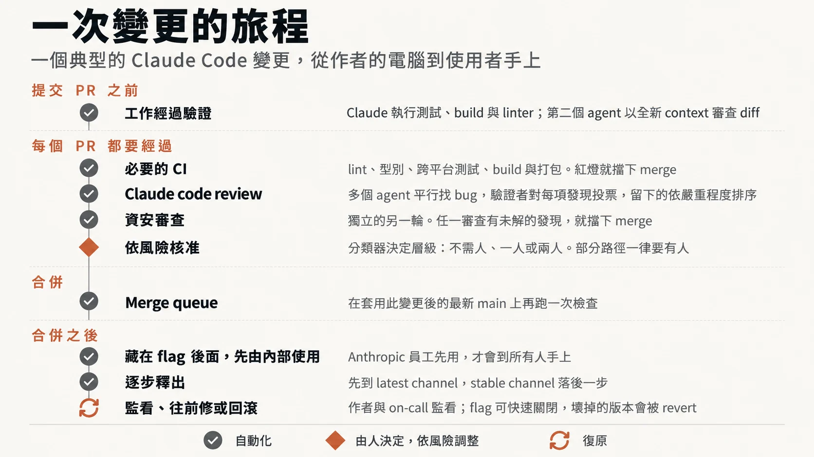
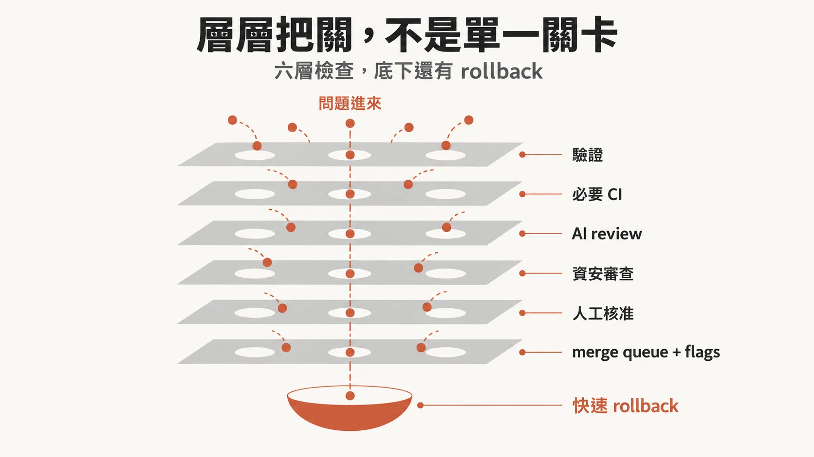
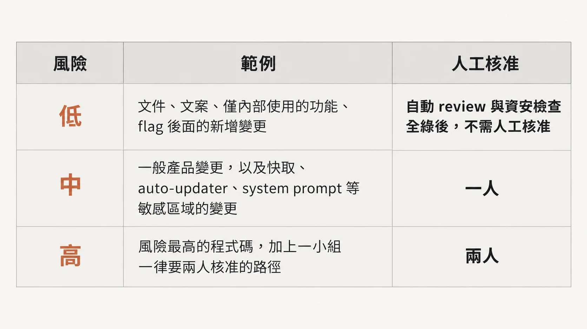
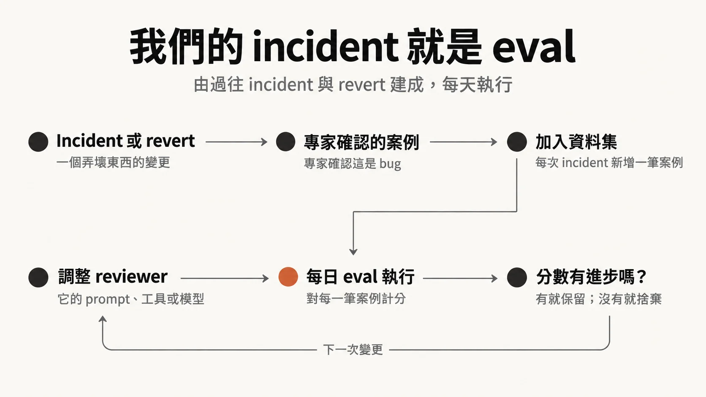
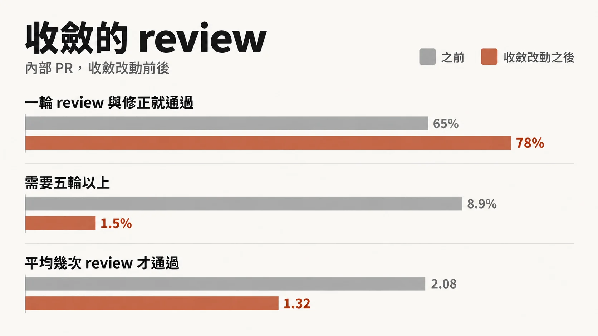
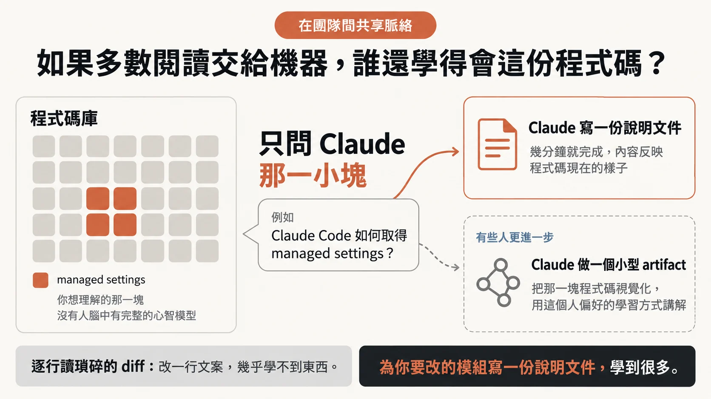

九成程式碼由 Claude 寫，誰來讀？
Anthropic 自述，Claude 寫了 Claude Code 約 90% 的程式碼。這麼多程式碼，誰來讀？讀不完、出了事，又怎麼辦？
文章給的成績是：6 月到 9 月之間，合併進 Claude Code 程式碼庫的 PR 超過兩倍，需要 revert 的 PR 比例卻下降超過 40%（官方部落格）。這是 Anthropic 自述，只能看出方向，但書見文末數字表。
變更量的背景來自整個 Anthropic monorepo：今年 5 月每天大約有 2,500 個變更被合併，到了 9 月超過 30,000，四個月超過十二倍（官方部落格、Redesigning source control）。要分清楚的是，這是 monorepo 的數字。原文寫明，Claude Code 不在那個 monorepo 裡，它有自己的幾個 repo（CLI、桌面與網頁 app、行動 app）；Claude Code 這邊沒有公布每日合併數，但同樣承受大量變更。
code review 並沒有停，只是大部分「閱讀」交給了自動化，整套流程調成盡量省人的時間，同時花大力氣讓錯誤能又快又容易地退回（rollback）。
一行一行讀，為什麼走不下去
傳統 code review 有個隱含假設：有人讀過，所以比較安全。原文只說，變更量暴增之後，逐行人工審查越來越難，甚至不可能。本文判斷，實務上通常會走向兩種情形：審查者變成瓶頸，PR 排隊等人；或是開始草草按下核准，讓「有人讀過」淪為形式。
Anthropic 先換掉問題本身。
問題一換，審查的時間點也跟著動。傳統審查發生在事後，程式寫完、PR 開好、作者等別人有空。Claude Code 團隊把審查拉進寫程式的過程，像邊打字邊跑的拼字檢查。多數變更在人被請來看之前，至少已被 Claude 審過、修過一輪。
文章還提出一個算法：人的時間是「兩面的成本」。一面是花在審查上的時間，另一面是修補爛程式碼引入的 bug 所花的時間。只壓低前者、沒壓低後者，人力並沒有省下來，只是從審查搬到救火。
目標寫得很具體：Claude Code 的 repo 裡，大多數 PR 合併時最多只需一個人在迴圈裡（可以就是作者），而且 revert 與事故不能增加。追蹤的指標有每個 PR 人工核准次數的中位數（以及第 95 百分位）、人工留言數、PR 等人的時間；revert 率與事故率當護欄。
一個變更從筆電到使用者手上的路
一個典型的 Claude Code 變更，不論來自工程師的筆電，還是 Slack 裡的 Claude session，都走同一條路。

原文把這條路整理成六層檢查：第 1 到第 6 層負責攔截，第 7 項是快速回饋與退回，接住穿過所有層的漏網之魚。
本文判斷，這很像資安領域的縱深防禦：沒有一層被期待完美，靠的是各層盲點不重疊。下方圖 B 中央那條直通到底的虛線就是這個弱點：如果某一類問題剛好落在每一層的盲點上，它會一路穿到最底下的退回機制。

第 1 層：PR 開出來之前
大部分審查發生在 PR 之前。他們要求 Claude 做能跑的事，例如跑測試、跑 build、把截圖和設計稿比對，並拿出結果，別只說「完成了」；再讓一個 subagent 用全新的 context 審 diff。這兩招都寫在官方的最佳實務指南裡。打造 Claude Code 的 Boris Cherny 估計，給 Claude 一套驗證流程可以讓產出品質提高兩到三倍；這是他的個人估計。
自動審查者若一再抓到同一類問題，就從源頭修：改 skill、加 lint 規則，或更新文件。CLAUDE.md 描述專案的慣例與目標，每次審查都會載入，大型程式碼庫要寫短。
REVIEW.md 讓程式碼負責人告訴審查者自己那塊什麼最重要，他們也會另外檢查審查者是否真的照做。好的 REVIEW.md 要：
- 定義什麼算失敗
- 限制吹毛求疵
- 要求附上檔名與行號
- 在開頭給出問題數量，或明說「沒有問題」
第 2–4 層：人看之前，先跑過幾十項檢查
每個 PR 在人看之前，先經過 Claude 審查（第 2 層）：把 diff 放在整個程式碼庫與作者陳述的意圖之下檢視，看它是否真的解決問題、跟大系統合不合、會不會弄壞別處。找到的問題會先過濾：多個 agent 平行找 bug，再投票決定真假，票數不夠的丟掉；純風格類意見也濾掉，這些過濾規則先在自家 PR 上做過 A/B 測試。
剩下的依嚴重度標成 Important、Nit 或 Pre-existing，最後一類讓作者不必替不是這個 PR 引入的舊 bug 挨罰。
在 Claude Code 團隊內部，資安審查是另一個獨立步驟（第 3 層），兩邊只要還有未解的 finding，PR 就不能合併；作者可以修掉，或附理由關閉 thread（處理誤報的方式）。第 4 層是必要的自動檢查：lint、型別、各平台測試、build，一個典型 CLI PR 在任何人看之前就可能跑過幾十項檢查。PR 範本裡有「怎麼測的」「怎麼 revert」，Claude 可以代答，作者負責確認。圖 A、B 把必要 CI 排在 AI 審查之前，與正文編號不同。
這裡要把兩件事分開。「有未解 finding 就不能合併」是 Claude Code 團隊自己的流程規則。對外的 Code Review 產品依產品文件，只發布 findings，不核准也不擋 PR；它只讀 diff 與周邊程式碼，不執行程式；文件也直說它可能漏掉 bug。原文沒說內部怎麼實作這個「擋」，只在導入清單裡建議「規定所有 review thread 解決才能合併」。
這個產品開放給 Team 與 Enterprise 方案，管理員可替每個 repo 設定 Quick、Standard、Deep 三種審查等級；另有本機輕量版 /code-review。Anthropic 自述，自 research preview 推出以來，內部 PR 得到實質審查意見的比例從 16% 升到 54%（官方部落格）。
第 5 層：依風險決定要幾個人

分級依據變更本身，和作者是誰無關。一個分類器判定風險等級，另一個分類器判斷某個變更是否即使等級沒要求、也該多一個人核准；負責人標為敏感的路徑與任何 CI workflow 檔案，永遠需要額外核准。
值得細看的是中風險：快取、自動更新器、系統提示詞這些敏感區域只要一個人。敏感不等於最高風險；要兩個人的，是最高風險的程式碼，加上一小群固定要兩人核准的路徑。本文判斷，對想參考的團隊來說最難抄的是那兩個分類器，整套分級可不可信全繫於它們，而原文沒交代分類器怎麼建、誤判率多少。
幾條規則讓分級不容易被鑽漏洞：
- 只有 repo 信任名單上的作者享有較寬鬆要求，其他人一律要第二人核准。
- agent 的核准不算人工核准，需要人的時候它無法頂替。
- agent 寫的 PR，啟動它的人永遠算在必要審查者之內。
- 核准只對一個 commit 有效，出現 agent 推的或手動解衝突的新 commit，就得重新核准。
第 6 層與第 7 項：合併、釋出、退回
merge queue 讓每個變更在套用後的最新 main 上重跑所有檢查，避免兩個各自通過的 PR 合在一起弄壞 main。新功能多半藏在 feature flag 後，先給 Anthropic 員工用，再先上 latest 頻道、stable 隨後。
merge queue 是 Claude Code repos 的做法；Anthropic 另一篇工程文章談的是 monorepo，那裡的說法是在 agent 規模的 monorepo 上，傳統 merge queue 已經不合理（Redesigning source control）。兩篇講的是不同規模、不同程式碼庫，別混著讀。
第 7 項承認總會有壞變更溜過去。藏在旗標後的變更不必重新部署就能關掉；每週輪值的 on-call 在事故檢討時會回頭問「哪一層本該攔住它」。文中坦承，目前還沒有依 revert 與事故指標自動調整核准要求的斷路器，仍在研究。
審查者也要被審
AI 審查者換模型或改提示詞後，好壞得有人知道，所以審查者本身也要持續校準。

本文判斷：評估集來自自家真實的失敗，比外部 benchmark 貼近現場。限制也很明顯：它只衡量過去出過的那類錯，對沒發生過的新型失敗沒有鑑別力，而且每筆案例都要熟悉程式碼的工程師確認，耗的是資深人力。
另一端是雜訊。只要願意回報一堆不是 bug 的東西，抓 bug 率很容易就能拉高。他們依 PR 上的人怎麼處理每則留言來分類（修了、拒絕、說明是刻意的、認為無所謂），也把審查系統跑在已知乾淨的 PR 上，看它多常報出會導致有害修改的意見。
明訂的優先序是：先找到真 bug，再減少審查輪數。後者在 agent 當作者時特別要緊。
文中的極端例子是 CLI 專案裡一個 PR，在 agent 作者與 agent 審查者之間一夜來回超過五十輪，最後靠人手動停下。對反覆被標出的內容跑 git blame，約 59% 的程式碼從第一輪就在了：審查系統很少找到新 bug，只是每輪多挖出幾個舊的。這是 Anthropic 自述的單一案例；本文認為它的機制有普遍性：兩個不會累的 agent 湊在一起，沒有收斂條件就會互相拖著跑。團隊自己預設跑好幾輪的習慣也火上加油。
他們的修法有四條：
- 三輪後要求作者重新評估做法
- 初始幾輪後只重審新 diff
- 指出 bug 的類別，讓作者一次修完同類問題
- 不重複回報已提過的問題

這組數字同樣是 Anthropic 自述（見文末數字表）。最值得看的是長尾：需要五輪以上的 PR 從 8.9% 降到 1.5%。
人被留在哪裡
讓資深工程師停下手邊工作去審一個常見錯誤，比自動化昂貴。文中列出幾件仍需要人的事：
- 決定該不該做，設定產品的品味與目標
- 審查計費、自動更新器、CI workflow 這類危險程式碼
- 架構審查，因為那會變成別人跟隨的慣例
- 核對測試輸出、指令、截圖等證據
- 承擔責任：不管誰打的字，每個上線的變更都有一個人負責
code review 向來還有第二個功能：讓團隊知道程式碼改了什麼。讀同事的 diff，是多數人理解程式碼庫的方式。機器接走大部分閱讀之後，原文自問：那要怎麼學會這個程式碼庫？

Anthropic 坦白說他們沒有正式機制處理這件事，也不認為誰需要腦中裝著整個 Claude Code。補位的是隨需產生的說明，加上預設公開、在開放 Slack 頻道工作的文化。
本文判斷，這個做法的說服力來自比較基準：逐行讀一行文案修改本來就學不到多少東西。它沒回答的是，被動接觸程式碼的機會變少後，新人怎麼知道該問哪一塊？要主動問，得先知道自己哪裡不懂。想導入的團隊得自己補上這個落差。
責任歸屬是「你合進去的，你負責」，中小型變更出事，一般預期作者自己修。原文說這不會失控，靠的是變更小、凡事可退回、影響範圍決定審查門檻、遙測與內部使用很快暴露退化，以及不究責、事故檢討看系統。
最後是轉向：agent 讓開工變得便宜，但頻道裡有人指出方向不對時，作者就關掉 PR 或改做法。程式碼寫得快，關掉也不心疼，關鍵是在討論串早期轉向，別等 PR 完成才丟一個擋下來的意見。
這些數字該怎麼讀
本文數字幾乎都是 Anthropic 對自家流程的描述，沒有第三方能交叉驗證。
| 數字 | 內容 | 讀的時候要留意什麼 |
|---|---|---|
| 約 90% | Claude 寫了 Claude Code 約 90% 的程式碼 | 官方自述，未說明怎麼計算 |
| 2,500 → 30,000 以上 | monorepo 每日合併的變更數，5 月到 9 月 | 兩篇官方文章一致，是本文少數能由兩個官方頁面對上的數據；這是 monorepo，Claude Code 不在其中 |
| PR 超過兩倍、revert 降逾 40% | Claude Code 程式碼庫 6 月到 9 月的合併 PR 數與需 revert 的比例 | 官方自述，沒有 PR 實際數量（分母）、沒有 revert 的定義、沒有樣本說明 |
| 16% → 54% | research preview 推出以來，內部 PR 得到實質審查意見的比例 | 官方自述；對象是內部 PR |
| 2 到 3 倍 | 加上驗證流程後 Claude 產出品質的提升 | Boris Cherny 的個人估計，未附量測方式 |
| 50 輪以上、約 59% | 單一 PR 一夜來回的輪數；反覆被標出的程式碼從第一輪就存在的比例 | 官方自述，單一案例 |
| 65%→78%、8.9%→1.5%、2.08→1.32 | 收斂改動前後的一輪通過率、五輪以上比例、平均通過輪數 | 官方自述，只出現在圖與官方表格，正文未寫；沒交代前後的觀察期間與 PR 數量 |
本文判斷，PR 翻倍、revert 比例下降兩者並陳，最容易被高估。沒有分母與 revert 定義，就無法判斷比例下降有多少來自品質提升、多少來自變更組成改變。照 Anthropic 自己的算法，方向是對的；能說的也就這樣。
這套制度真正在押注什麼
這一節是本文判斷，原文沒有這樣歸納；引用原文處會註明。
這套制度的賭注壓在「退回」上。低風險變更零人核准之所以說得通，是因為多數錯誤能在幾分鐘內被旗標、revert 或分階段釋出逆轉。這也指出它最可能壞在哪：有些錯誤退不回去。原文把計費、自動更新器、CI workflow 列為必須由人審的危險程式碼，正好對應退回成本高的地方；換到別的團隊，這份清單得依自己的系統重列。
第二個賭注是護欄指標。revert 率與事故率用來確認人的時間沒被搬走；前面提過還沒有斷路器，指標變差時仍靠人眼盯著。
第三個是信任名單與分類器。名單開太寬，自己人就等於免審；分類器只要看走眼，高風險的變更會被當成低風險放過去。
原文也記下一個團隊成員的觀察：放慢速度、減少產出確實可能提高準確度，但主要是因為工作量變少。Anthropic 選擇把力氣放在更快發現與修正問題上。對 Claude Code 這種高頻迭代、修正能很快發布的產品，這個選擇合理；對一年只發布幾次、每次要客戶配合升級的軟體，就不一定成立。
原文最後談方向：產品版 Code Review 推出時，設計是最終核准仍由人做；在自家 repo，負責人已在決定哪些低風險變更可以在自動檢查通過後直接合併，這條界線還會移動。目標是在 revert 率不高於現在的前提下，持續減少每個變更需要的人力。
想照做，先做哪幾件
原文的導入清單依流程階段排列（PR 之前、每個 PR、核准、合併後），大部分元件已能直接取得。下面改依團隊規模與成本重排，排序和小團隊建議是本文判斷：
- 從 PR 之前開始，任何規模都能做。給 agent 一份可執行的檢查清單寫進簡短的 CLAUDE.md，用 hooks 自動呼叫 formatter 與 linter，開 PR 前在本機跑
/code-review、/security-review，或讓新 context 的 subagent 審 diff。成本最低，小團隊第一週就能上。 - AI 審查者先在一個 repo 試幾週。原文建議在單一 repo 加上審查者並調整 REVIEW.md，再推到其他 repo。沒調好的審查者會製造大量雜訊，人很快就學會忽略它。
- PR 範本加上「測試方式」「風險」「如何退回」，並規定所有審查 thread 解決才能合併。用 Code Review 產品的話要記得它本身不擋 PR，這條規則得靠 branch protection 或 CI 自己設。
- 一開始就限制審查輪數，幾輪後只審新 diff。只要讓 agent 回應審查意見就該設上限，與團隊大小無關。
- 風險分級從嚴開始，看到證據再放寬。依變更定等級，bot 核准不能抵必要核准，新 commit 推上來就撤銷舊核准，auth、計費、CI、釋出流程與安裝程式用 CODEOWNERS 與 branch protection 指定由人核准。小團隊可以先只做「agent 核准不算數」與「敏感路徑必須有人」兩條，分類器等量大到人工判斷忙不過來再說。
- 先把退回做便宜，再談放寬核准。merge queue、feature flag、內部先用、分階段釋出、一步完成的 revert 機制是地基。沒有快速退回機制的團隊，不該照抄零人核准的低風險層級，省下的審查時間很可能轉去救火。
- 把事故與 revert 記下來，變成審查者的評估集，每次換提示詞、工具或模型就重新評分，並以 revert 與事故率當人力指標的護欄。逐筆確認案例要專家時間，適合已有一定事故紀錄的團隊；小團隊可以先從每次 revert 寫一行原因開始累積。
製作說明：這篇導讀由 AI 模型完成
本篇導讀由 AI 模型完成，整體未經人工逐句校稿，可能有誤，請以原文為準。文中數字多為 Anthropic 對自家流程的自述，已與官方頁面互相比對，只有單一來源或屬於個人估計者在文中降級標示；標「本文判斷」處是導讀的推論，原文沒有這樣說。
- 分析與撰稿：Claude Opus
- 統籌：Claude Sonnet 5.5
- 獨立審稿：Claude Opus，事實與編輯各一輪
- 最後潤稿與標重點：Claude Opus
- 圖片：原文圖 A–F 由 OpenAI Codex 的 imagegen 依原圖重繪為繁中版；原圖由 Anthropic 製作，版權屬原作者。封面為 AI 生成的概念插畫
來源清單
- How the Claude Code team does code review，2026-10-26，Addy Osmani 的 X 長文，文末註明為官方文章的改寫版，本導讀的主要素材
- How the Claude Code team does code review，2026-10-15，Anthropic 官方部落格原文（與 X 長文同名，X 版為其改寫），作者 Addy Osmani、Morgan Westlee Lunt、Qing Wang
- Code Review（Claude Code 產品文件），頁面未標日期（2026-10-29 查閱），說明產品只發 findings、不核准也不擋 PR、不執行程式碼、可能漏掉 bug
- Redesigning source control at Anthropic，2026-10-13（10-15 更新），Anthropic 工程文章，含 monorepo 每日合併數與 agent 規模 monorepo 上傳統 merge queue 不合理的說法
- Claude Code best practices，頁面未標日期（2026-10-29 查閱），PR 前驗證與新 context subagent 審查的做法出處